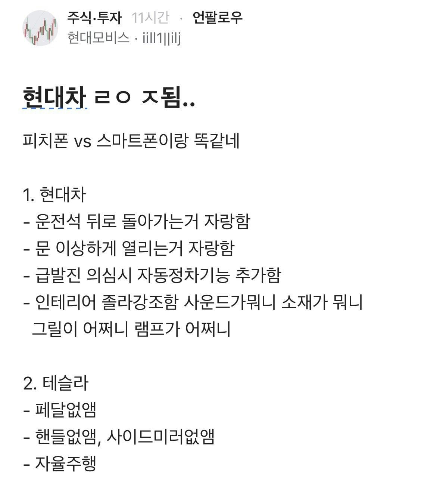
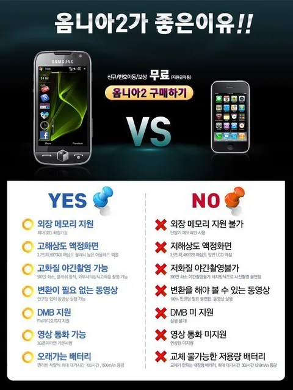

이 지경까지 오다니


이 지경까지 오다니
중국산 전기차 타는 애들이 시끄럽긴 오지게 시끄럽네
도대체 저 3개 없앤 것이 대단하고 하냐? 도로에서 얼마나 별의 별 일들이 벌어지는데 인간의 개입이 불가피 할 때 최소한의 최소한의 비상 조종 장치는 필요하다고 보는데 뭔 저 3개 없애는게 대단한 자랑거리로 보는건 미쳤다고 보는데
그런 불가피한 상황을 회피할 수 있다고 생각한 자신감이 대단한거지. 내부적으로 수많은 상황을 시뮬레이션하고 충분히 상업적으로 대처가능하다고 판단했다는 이야기인데 이 부분에 현대를 비롯한 다른 메이커들은 아직 도달 못한거고.
자율주행 자체는 현대도 할 수 있지만 예상치못한 상황에 대한 대처나 회피는 준비가 안됐다는 거지.
스마트폰의 물리 버튼 없앨 때도 비슷했지..
무한책임질수있는 자신감은 기술력에서 나오지않았을까? 지켜봐야지 우리는 언제나 새 기술이 나왔고 검증했지
페달, 핸들 벌써 없앴음?
그럼 불안해서 타기 싫은데 ㅡㅡ
그보다 승차감이 냉장고에 바퀴 달린거 같은 느낌이라 ㅈ같음
제네시스 정도에 FSD 달리면 너무 좋겠는데
최소한 그 가격이면 아반떼 정도만 됐어도 매일 찬양 했을듯
난 운전하는걸 좋아해서 테슬라 생각도 없는데 FSD 궁금하긴 함.
아니 그렇게 운전이 싫으면 택시를타 테슬람들아
저건 실제로 테슬라 택시인 사이버캡 얘기임
Gv90 진짜 실내 들어갈거 다 들어간 느낌이긴하더라.
자율주행만 볼게 아님
중국테슬라 FSD되지도 않으면서 왜삼??
그런데 폰과 차는 다르지 애플이 차는 포기했듯
그냥 테슬람들은 대가리깨진 놈들이라 무시하면됨
'자동'차 시대에 '수동'차 모는 기분이 어떠냐고 묻는 선민의식 대단한 양반들이라 꼴뵈기싫음 정작 지들은 한국시장 점유율 먹으려고 할인 개때린 모델Y가성비로 사는거면서 무슨 대단한 신문물 점유한거마냥 으스대는꼴이 줘패고싶음
근데 테슬라야 한국처럼 시베리아~적도날씨로 편차가 큰 나라에선(앞으로 더 편차 심해질예정)
고열 다습으로 차가 맛이가거나 얼어붙은 차문 여는등 수동으로 쓰는 방법은 남겨야하지 않겠니?
물론 아직도 자율주행 못하니까 외국 자율주행들 틀어막아대는 현기가 괘씸한거 맞음
저런 소리 하는건 테슬람 새끼들 밖에 없음
제대로 된 테슬라 차주는 저런 소리 안함
운전 못 하는 자동차가 왜 자동차야
아 섹스하고싶다
맞긴 하지 운전을 하고 싶어서 하는 사람보다는 해야하니까 하는 사람이 훨씬 많을텐데 사람이 직접 운전 안 해도 되는건 압도적인 장점임
아이폰은 없는게 낭만인데 차는 있는게 낭만 아님?
어차피 시간지나면 다 수렴진화함